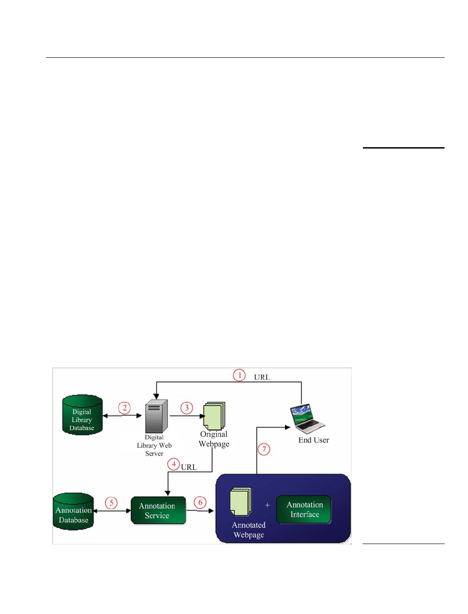

4. Taiwan library history digital library with the annotation tool for
archiving and sharing reader knowledge
4.1 System architecture
Figure 7 presents the system architecture of the proposed annotation tool in the Taiwan
library history DL for archiving and sharing reader knowledge. The proposed DL with
the user annotation tool consists of the Taiwan library history DL, the annotation
module, an annotation interface, and two databases. The DL provides materials readers
browse, search, read, and annotate. The annotation service module integrates original
material archived in the DL with annotations from readers to form new DL material with
additional information and/or contexts. To avoid destroying the original version of
archived materials, the annotation service module uses an independent annotation
database, which differs from the DL database, to store annotated information and
contexts from readers. Moreover, the annotation interface provides several powerful
annotation functionalities, such as annotating key paragraphs in a text via underlining,
explaining unknown terms, providing comments on marked words or sentences, and
assigning hyperlinks to marked words or sentences, to assist readers annotating an
original archived material in the Taiwan library history DL. The annotation interface
also has a knowledge-sharing interface that facilitates knowledge exchange among
readers who read annotated materials in the DL.
4.2 System operation procedure
Based on the system architecture, the system operating procedure is described and
summarized as follows.
A user requests a webpage archived in the Taiwan library history DL for reading
by assigning a URL for browser. The DL system then accesses the webpage that the
user requested from the DL database.
The DL system shows the original webpage in HTML for reader annotation. The
DL system then passes the URL address given by the user to the annotation service
Figure 7.
System architecture of the
proposed annotation tool
on Taiwan library history
digital library
Developing a
library history
435